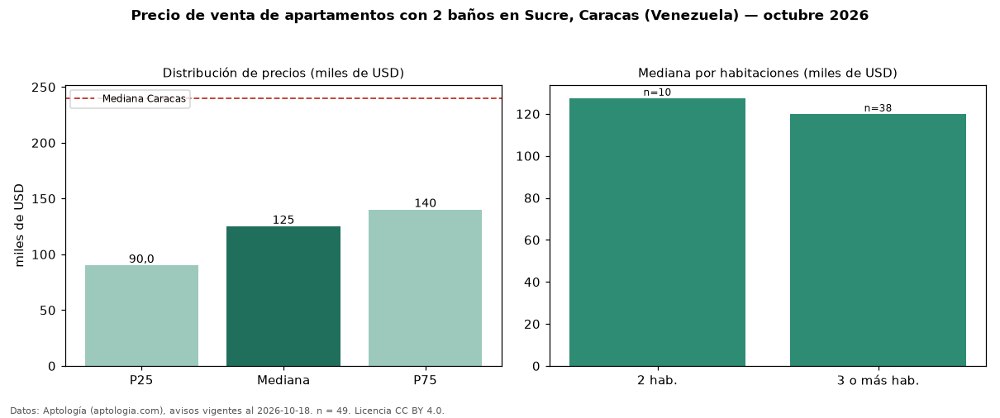

Precio de venta de apartamentos con 2 baños en Sucre, Caracas (Venezuela) — octubre 2026
En Sucre, Caracas (Venezuela), la mediana de precio de venta de apartamentos con 2 baños es USD 125.000, según 49 avisos vigentes. Frente a la mediana de todos los apartamentos en venta de Sucre (USD 131.000, n = 134), queda 5 % por debajo; este segmento reúne el 37 % de esos avisos. Por metro cuadrado, la mediana es USD 1.192/m² (n = 48), 19 % por encima del conjunto de referencia (USD 1.000/m²). El área mediana anunciada es 98 m². El segmento con más oferta es el de 3 o más habitaciones (38 avisos, mediana USD 120.000); pasar de 2 habitaciones a 3 o más habitaciones cambia la mediana −6 %. La mediana de todos los apartamentos en venta de Caracas es USD 240.000 (−48 % de diferencia). La mitad central de los avisos va de USD 90.000 a USD 140.000 (razón 1,6), una dispersión moderada. Datos: Aptología (aptologia.com), CC BY 4.0 — https://www.aptologia.com/ve/venta/caracas/sucre. Archivos: PDF, CSV con las cifras y gráfica PNG.

| Avisos únicos | 49 |
|---|---|
| Percentil 25 | COP 90.000 |
| Mediana | COP 125.000 |
| Percentil 75 | COP 140.000 |
| Mediana por m² | COP 1.191 |
Fuente: avisos vigentes de portales inmobiliarios recopilados por Aptología, deduplicados (mínimo 30 avisos únicos por celda). Precios pedidos, no cerrados. Fecha: 2026-10-18.